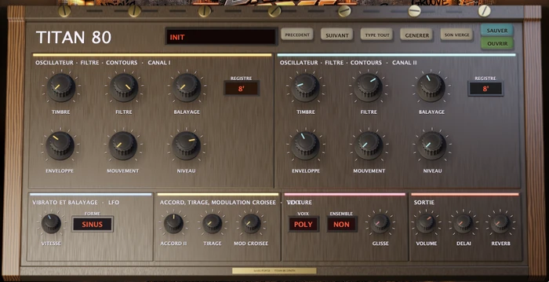

TITAN
Un synthé géant à gros boutons : des cuivres immenses, des drones, des nappes qui respirent, en tournant six boutons par canal.
Synthétiseur polyphonique bicanal · 8 voix · huit macros
Compris dans le pack plug-ins Forge (14,90 € TTC) et dans Forge Studio (49 €, bientôt). TVA non applicable, art. 293 B du CGI

Le son
Ce que ça change dans votre morceau
Chaque voix de TITAN empile deux canaux, I et II, que l’on règle avec six gros boutons chacun : TIMBRE, FILTRE, BALAYAGE, ENVELOPPE, MOUVEMENT et NIVEAU. TIMBRE traverse tout un monde de formes d’onde, du plus sage au plus riche : cuivres, gros snaps, drones, nappes, effets spéciaux.
TIRAGE change de monde sous les mêmes boutons, et MOD CROISÉE fait moduler un canal par l’autre. Huit voix, un ensemble et deux effets intégrés : on joue des accords massifs.
Inspiration. Inspiré du synthétiseur Yamaha CS-80.
Trois points forts
Six boutons par canal
Timbre, filtre, balayage, enveloppe, mouvement et niveau : peu de réglages, beaucoup de son.
Un timbre qui traverse un monde
Du sage au riche : cuivres, snaps, drones, nappes, effets.
Un tirage pour changer de monde
TIRAGE offre d’autres sons sous les mêmes boutons.
Mode d’emploi
Comment l’utiliser
Commencez par le canal I : tournez TIMBRE jusqu’à trouver la couleur, puis FILTRE pour l’ouvrir. Ajoutez le canal II en le désaccordant légèrement. Utilisez MOUVEMENT pour animer le son, et TIRAGE pour explorer d’autres familles de timbres.
Pour un son plus agressif, montez MOD CROISÉE.
Des idées pour démarrer
- Accords massifs : deux canaux désaccordés, ensemble, réverbe.
- Drone sombre : timbre bas, mouvement lent, enveloppe longue.
- Cuivres larges : timbre haut, enveloppe de filtre courte.
- Effets spéciaux : MOD CROISÉE poussée, tirage différent.
Les réglages
Ce que fait chaque réglage
- Timbre
- Parcourt une grande famille de formes d’onde.
- Filtre / Balayage
- Le filtre et son déplacement dans le temps.
- Enveloppe / Mouvement
- Comment le son évolue au fil de la note.
- Niveau
- Le volume de chaque canal.
- Tirage
- Change de monde de timbres sous les mêmes boutons.
- Mod croisée
- Un canal module l’autre.
- Ensemble
- Un chorus à plusieurs lignes : I, II ou I+II.
- Voix
- Poly, unisson ou mono, avec glisse.
Pour qui
Quand le sortir
Pour qui veut du son énorme sans se noyer dans les réglages : accords de cuivres, nappes, drones, effets pour les intros et les breaks.
Fiche technique
- Formats
- Audio Unit, VST3
- Système
- macOS 10.15 ou plus récent, Apple Silicon et Intel
- Entrées / sorties
- Entrée MIDI, sortie stéréo
- Polyphonie
- Huit voix
- Canaux
- Deux par voix, six boutons chacun
- Inspiration
- Inspiré du synthétiseur Yamaha CS-80.
Les noms de produits et marques cités appartiennent à leurs propriétaires respectifs ; ils sont utilisés uniquement pour décrire l’inspiration. BrickS n’est affilié à aucune de ces marques.